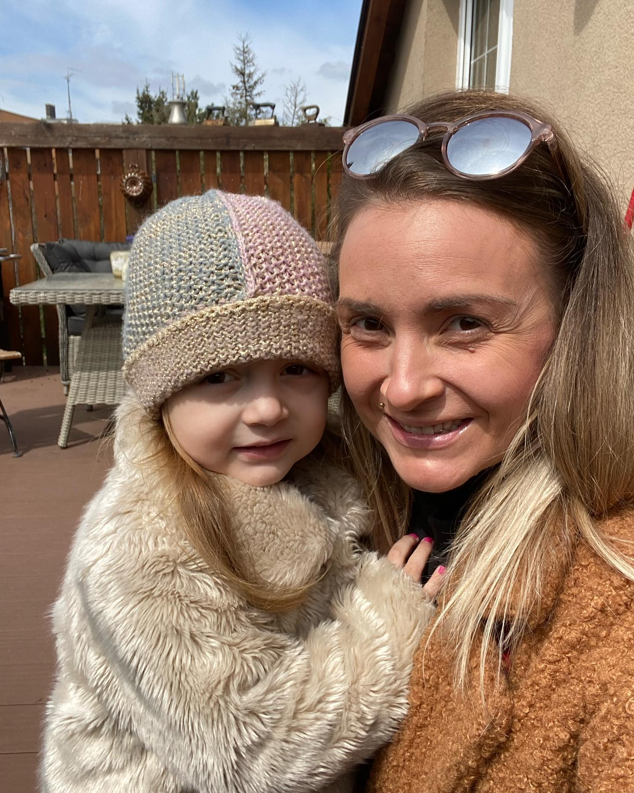

Zelenina podľa @vondrovic_nikca — Normy Jedál
Myší kožíšci🐭
Vyrazili jsme si na trh na Jiřáku... po tak dlouhý době to byl balzám na duši... fakt 🌷🌷🌷
#mydve #vylet #rrhy #trhynajiraku #super #kozisek #trochuzima #zelenina #tulipany #milujudekuju